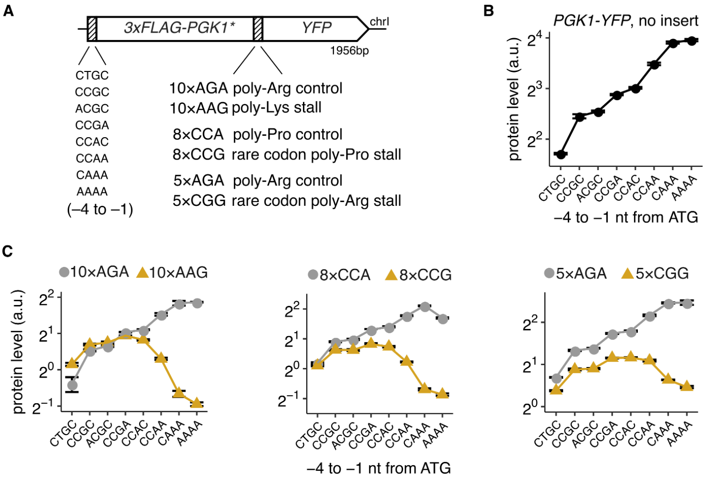
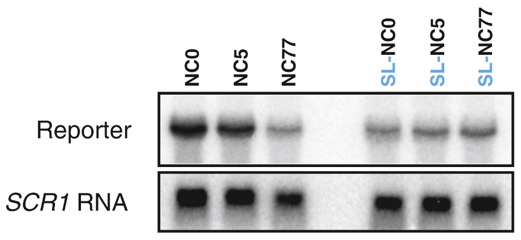
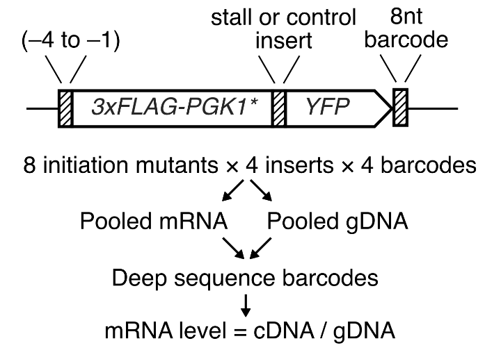
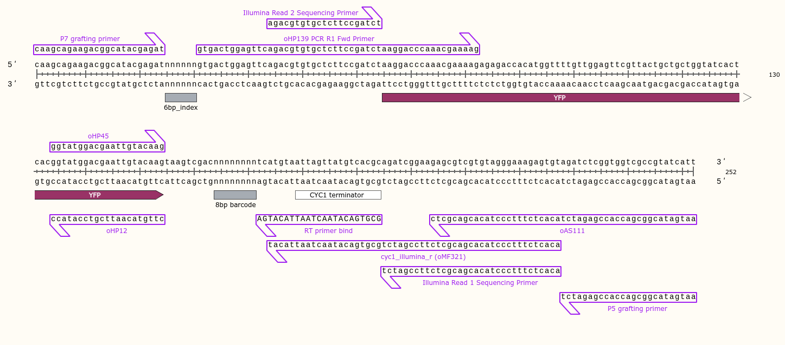

Arvind R. Subramaniam
Assistant Member
Basic Sciences Division and Computational Biology Program
Fred Hutchinson Cancer Research Center
A full stack analysis will require many of these tools and others.
Today, we will work through a simple but realistic example of such an analysis.


Fig. 5 in Radhakrishnan 2019

.fastq files.
Log on to rhino.
ssh rhino
Check that raw .fastq.gz files are available.
+rasi@rhino3:~$ ls -1 /fh/fast/subramaniam_a/tfcb/lecture19/*.fastq.gz hpark_exp152_cdna_1_GCGGAC_L002_R1_001.fastq.gz hpark_exp152_gdna_1_AAGCTA_L002_R1_001.fastq.gz hpark_exp152_gdna_1_AAGCTA_L002_R1_002.fastq.gz
tfcb_lecture19 for the analysis~/gitcd ~/git
git clone https://github.com/rasilab/tfcb_lecture19.git
tfcb_lecture19/datacd ~/git/tfcb_lecture19 mkdir data cd data scp rhino3://fh/fast/subramaniam_a/tfcb/lecture19/*.fastq.gz .
tfcb_lecture19/datascp rhino3://fh/fast/subramaniam_a/tfcb/lecture19/*.tsv .

jupyter notebook for counting barcodesRStudio for plotting the resultsGithub